Content from What is Arches?
Last updated on 2026-03-25 | Edit this page
Estimated time: 20 minutes
Overview
Questions
- What is Arches and why should it be used?
Objectives
- Explain the benefits of using Arches.
- Explain the basics of how Arches work.
Introduction
Put yourself in the shoes of a collector of cards, or of antiques, of old misprinted coins, or rare one-of-a-kind stamps. Physical items of sentimental, cultural or heritage value to yourself or to society. Be it as an individual or group or an organisation dedicated to the collection and documentation of things of value, you would eventually run into the problems of scale attributed to physical collections:
- It is unwieldy to store them, with large museums renting out massive climate-regulated warehouses to store and preserve their massive collection of delicate treasures.

Warehouse for Minnesota History Center
It is impossible to display much, or even a majority of the collection, due to lack of space in museums proper. For instance, the National History Museum and many other museums in London only displays around 1 percent of their collection, opting to keep the rest of it in storage.
It becomes nightmarish to sort and curate the collection. Not just identifying items for research, even choosing which artefacts go on display and which remain on the shelf becomes a problem.
This is why many museums, large and small have digital heritage collections, some open to the public like the Louvre, others for administrative and curative use. There are many companies offering digital solutions to digitalising museums, though the cost may be prohibitive to larger museums.
Museu Fonografico Tuneril digital collections. Link to the museum: https://www.facebook.com/MuseuFonoTuneril/
A museum may instead host its own digital heritage, as can be seen above, the Museu Fonografico Tuneril hosts its digital collection on Facebook. But this way of storage may be insufficient for museums that need to store more complex information, to capture the complexities between objects to enhance the experience of browsing through the museum. This is where Arches offers a solution.
What is Arches and Why use it?
The Arches Project was created as a collaboration between Getty Conservation Institute and World Monuments Fund as a low cost digital inventory, focusing on massive customisation and offering modern solutons to heritage research and curation.
Naturally, there are many such technologies on the market offering solutions to digitalising heritage but Arches differs from them as it is open-source. Arches has a international collaborative community passionately working to update and improve the Arches experience for all users. Moreover, documentation of Arches is also available for public access, so anyone interested about Arches can learn more about it and help is available online to construct your own installation of it. Arches also does not charge licensing fees at all. The only necessary cost of Arches is the costs to run the server. This is ideal for small museums, collectors or hobbists to digitalise collections locally or on a server for minimal cost.
In this lesson, we will follow the character of Harry, an avid collector of rare European coins, boasting over 500 unique coins in his inventory. Eying to share his love of old coins and their rich and varied histories to the world, Hans has set up an Arches installation on a server he owns and looks to design and populate his digital collection.
| Harry the Coin Collector | EU Coins |
|---|---|
 |
Arches Functionality.
Arches Permissions.
Arches allows for groups with different levels of permissions to use it. In this course, we point out the permissions of the user and admin groups, noting also that permissions can be manually updated per installation. A large part of this course will involve end-user permissions, when more advanced functionalities are referenced, it will be done explicitly.
Content from Navigate the UI
Last updated on 2026-03-25 | Edit this page
Estimated time: 20 minutes
Overview
Questions
- How do you use Arches?
Objectives
- Perform basic operations on available Arches Demos.
- Exercise Reading (searching for) resources on the Arches Demo.
Access the Arches for Heritage Demo
Before working on our own installation of Arches, Hans decides to play around with some online demo versions of Arches to get the feel of the software. Do note that changes made to the Arches demo servers are temporary and will not be reflected on subsequent visits.
We can access an online version of Arches, Arches for HER using the following link: https://herdemo.archesproject.org/index.htm

This version is hosted online by the Arches community and is a version of Arches for Historic Environment Records, including a sample dataset from Greater London. Note that just about any part of an Arches deployment is customisable, including the home screen.
Find a set Resource from the Demo
There are several ways you may find and discover resources in Arches. If its name is known, we can search up its name directly. If not, we can look up the type of an object, or when it was made, or even what locations it is associated with.
Exercise: Look up a resource by name: On the Arches for HER Demo, click on Find on the top right.
We should navigate to the following page.
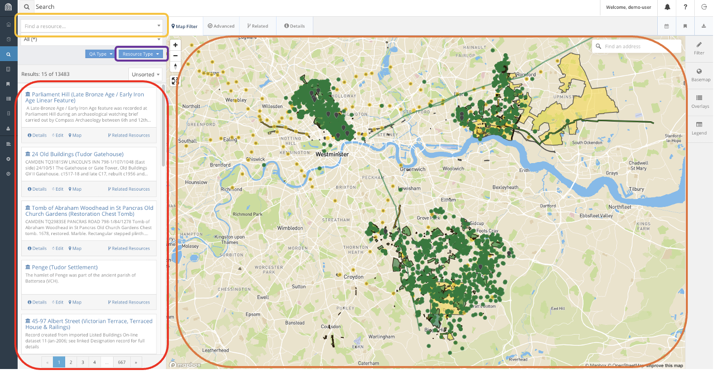
This is the hub for searching for resources in Arches. In this lesson, we will use the following features to look explore resources in Arches. Using the search bar, we can find resources directly using their name and filtering on their types. We can also use the map feature to find resources if we know their geographic location.
Looking at this vast collection of resources of cultural heritage in London, Harry decides to indulge in his curiousity of Edwardian Era Trains. Supposing we want to conduct a safety audit of Train Stations constructed during the Edwardian Era, how would we use this database to find the resources we want?
For instance, say we know of such a train station: Russell Square Station. We can try to find the Resource for Russell Square Station, a historical rail station built during the Edwardian Era.
We can find this resource several different ways. For instance, we can look up Russel Square on the search bar. This gets us a list of Resources related to Russel Square and zooms the map to Russel Square.
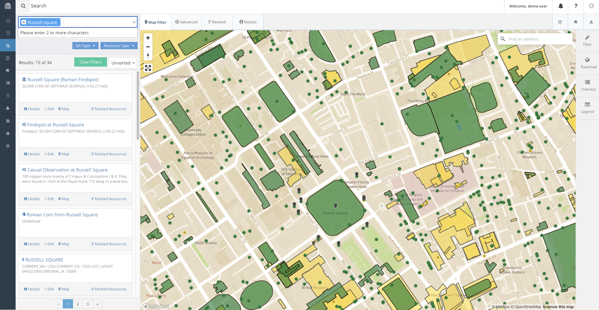
We can look through the results list and we will likely find the result. Alternatively, we can refine our search to include the word ‘station’ as well.
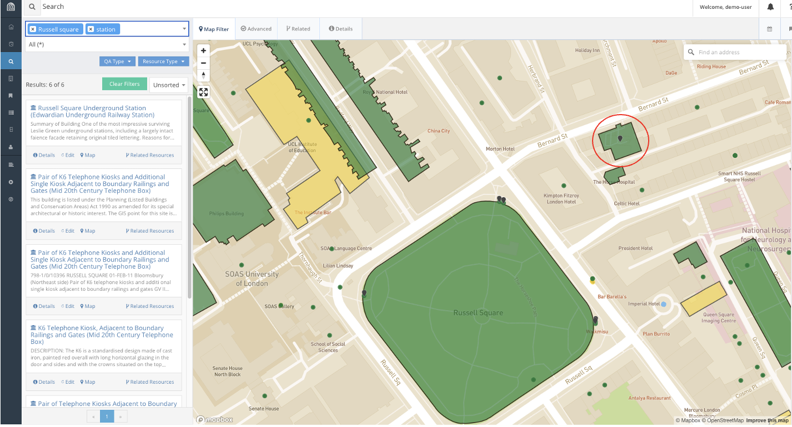
This immediately gets us to the correct resource in the search results, Russell Square Underground Station. In fact, if we know where the station is on the map, we could also find and select it on the map.
We can now click on the Report for Russell Square Underground Station which will open a new window with the information available for the station in the database.
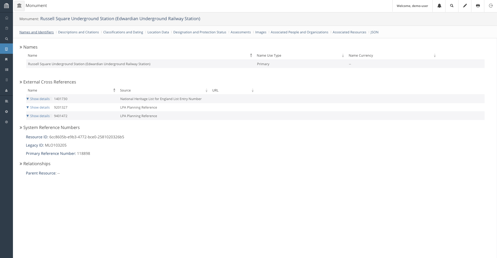
Explore Related Resources
We can also look for Resources related to other resources through the Related Resource function provided by Arches. On the window we found Russell Square Underground Station, we can find a network of resources associated to the station by clicking on the Related Resources button.
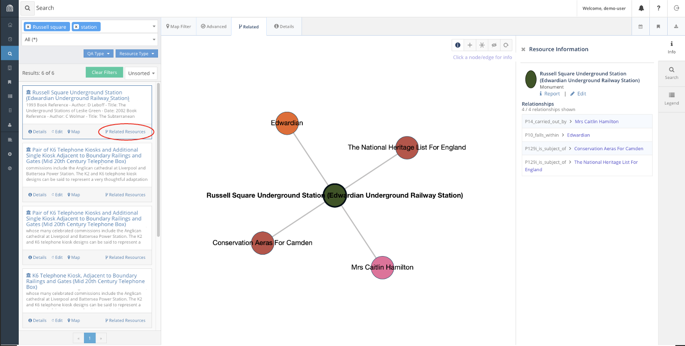
Here, we find that Russell Square Station is associated with the Edwardian Era, and is listed as a Conservation Area in Camden as well as The National Heritage List for England. These links are useful to find Resources through association.
For instance, suppose we want to collate a list of all Edwardian train stations in the database, including Russell Square. We can find such a list filtering for relations to the Edwardian era in our search.
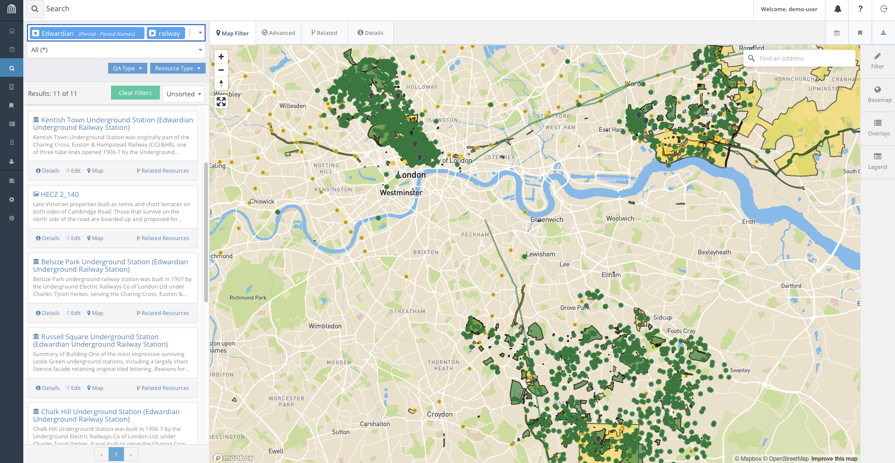
Using relations, we find four such that satisfy our conditions railway stations from the list:
- Kentish Town
- Belsize Park
- Chalk Hill
- Russell Square Underground Stations
And with the right information, Harry is off for his audit!
Challenge: Find a Resource from given parameters.
Finally, as a challenge on the current dataset, look for a Victorian era church in the Norwood area that was curiously constructed from concrete.
| Category | Data |
|---|---|
| Era | Victorian |
| Building | Church |
| Location | Norwood |
| Percularities | Concrete construction |
Conclusion
Of course, there are many other ways we could try to look for these items, and that is precisely because of the existence of the expressive database stored in Arches, that allows for links between objects to be stored and retrieved. In the next episode, we will explore how the Database works.
Content from Database Basics
Last updated on 2026-03-25 | Edit this page
Estimated time: 20 minutes
Overview
Questions
- How does the Arches Database work?
Objectives
- Learn the structure of the Arches Database.
- Understand how its customisability allows for flexible data storage in just about any format.
Database Basics.
A database is simply a way to store persistent information on a server, information that is shared and can be modified between users and periods of time. Databases are used all over web development, even on Arches itself, several discrete databases are used. For instance, to store login credentials and most importantly for heritage data storage.
A good database structure is good because it is well planned out enough and does not have to be changed. As such, an end-point user will likely not have to work with the Arches database structure all that much. Regardless, understanding of it is beneficial to understand its flexibility in design for heritage storage solutions as well as understand what the database can and cannot do. This is also important for Harry to design his rare coin database!
Given the fact that designing the database involves deciding how data is stored, you can imagine that it would not exactly be ideal to redesign the database while there is data in it, as it would involve changing the structure of all resources currently stored in it.
Arches Database.
The Arches database uses a graphical method of storing data that is proprietary to Arches and designed specifically for the use on heritage data in mind.
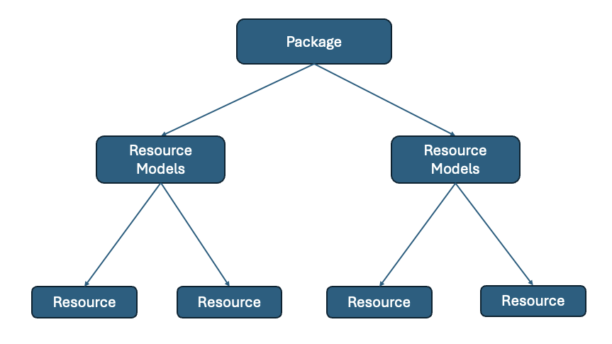
The above diagram shows a hierarchical structure of the Arches database.
The Resource Package is the database structure itself, tailored for each use case. A Resource Model is the structure of a type of entry in the database, for instance, a person or an organisation or a artefact. Resource Models are designed to fit the data available in the raw data used, if we have information on when an organisation was formed and when it is disbanded, the Resource Model for an organisation may include fields to reflect that. A Resource is an instance of an object adhering to a particular Resource Model. Jon Doe being an instance of a Person Resource Model for instance. An Arches installation has 1 Resource Package containing multiple Resource Models, each of which will contain multiple Resources.
For instance, suppose we were to define a database to store the list of passengers and crew abroad the Titanic. We might want to add Resource Models to fit the people abroad the ship, along with information about their names, places of origin, whether they survived the sinking, etc. We may also include information about the different lodgings abroad the ship, as well as the different types of passangers as well as recovered artefacts from that time period. A rudimentary design for this may look like this.
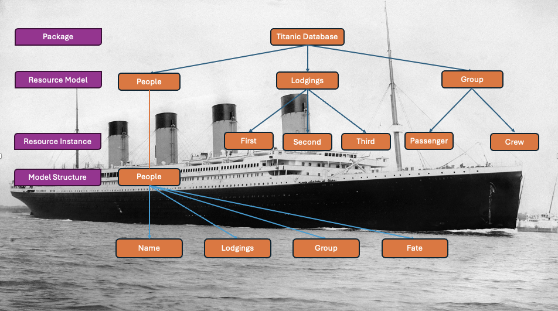
This Resource Package has 3 different Resource Models, for People, the Lodgings available as well as the Groups involved on the ship. Of which, instances of the lodging may include First, Second and Third Class rooms, and the Groups include Passengers and Crew. These are Instances of Resource Models. We also illustrate the structure of the Resource Model for People to contain their names, lodgings, group and fate.
Under this structure, an instance of a Person recorded in the database may include their name, the type of room they were staying in, whether they were passenger or crew and whether they survive the tragedy.
Naturally, this is not exhaustive. Other relevant categories such as nationality or gender and familiar relations can be added. We can also include workers of Harland and Wolff, the company responsible for the construction of the ship, as well as artefacts associated with and retrieved from the ship.
So, a relationship graph for a person resource in this database may look like this:
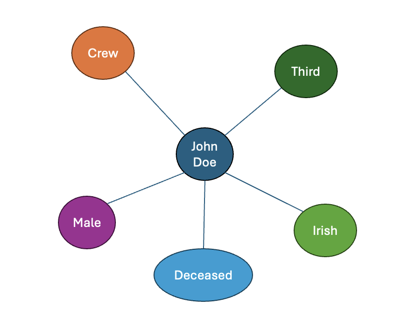
This describes a John Doe who is male, Irish, boarded the ship as a member of the crew, stayed in third-class lodging, who died in the sinking of the ship.
Exercise: Intuition for Resource Models.
In this section, we will help Harry design his database. He wants to put in as much information about the coins as possible. For inspiration he pulls out a coin from his wallet:
It is a Bulgarian 1 Euro coin, minted in 2026 in Bulgaria, featuring Saint Ivan of Rila the patron saint of Bulgaria and founder of the Rila Monastery. This is designed by Petar Stoikov, who has designed several other Bulgarian coins. Naturally, the coin is minted in Bulgaria, minted from copper and nicket. As it is minted recently and as it is minted for currency, the mintage is in the millions. Given that the coin is not rare, its value is the same as its face value, 1 Euro.
Content from Database Interaction
Last updated on 2026-03-25 | Edit this page
Estimated time: 20 minutes
Overview
Questions
- How to add, modify and maintain Resources in the Arches database?
Objectives
- Exercise Creating, Updating and Deleting resources on the Arches Demo.
Introduction
So far, we have covered how you would go about searching for information in Arches, but a database is only as good as its ability to keep itself up to date. In this lesson, we will learn to modify data on the Arches database.
Arches provides 2 ways to modify information in the database, through modifying the resource model tree directly or through workflows.
https://arches.readthedocs.io/en/latest/developing/extending/extensions/workflows/
Workflows are a streamlined way to modify the database designed to abstract away from working with Arches Resource Models themselves, which can end up being quite unwieldy.
However, workflows may not be implemented for every necessary operation on the database so interacting with resource model trees is still necessary.
Here, we will use the Arches for Science Demo, which is a Arches instance designed to manage heritage science data: https://afsdemo.archesproject.org
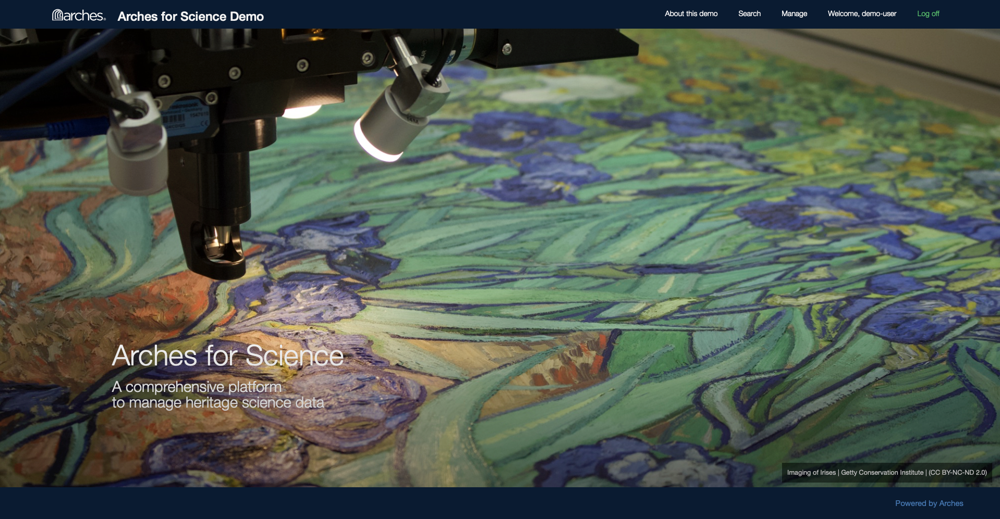
This Demo contains information about research done on heritage ceramic artefacts using the Arches for Science Resource Package.
As previously mentioned, modifications to Arches Demos are local to each session, so while we can edit the database to have a feel for the software, no one else can see our changes and they will be reset when we leave the webpage. On an actual Arches installation, changes made to the database will be persistent.
Using Workflow
Looking at the Arches for Science Demo, Harry decides to try to add a project into the database using Workflows. First, he searches for active projects in the database:
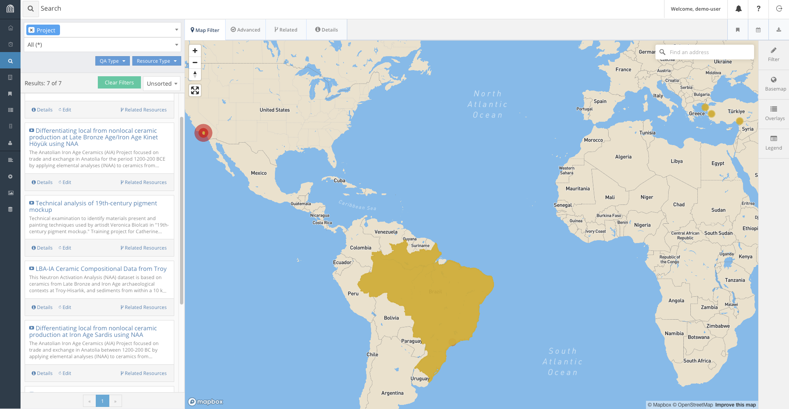
We find that projects have a name, a description, a list of physical objects involved, a start date, and a team.
Harry writes up some information for a possible project that could be added to the database:
- This project investigates the material composition of ceramics around different areas of the world to establish possible connections between pottery making methods across different communities.
- The project is kindly funded by the International Foundation for Pottery Heritage.
- The name of the project is : Necessary Rudiments for Robust Ceramic Making Methods
- The scale of the project is : initiative
- Earliest Start Date is 11 March 2026.
- Individuals involved are Wendy Rigter, Peter Grave and Ben Marsh.
- The Pottery objects that are studied are: Sherd 782 and Sherd 1617.
In order to add the project, here’s what we need to do:
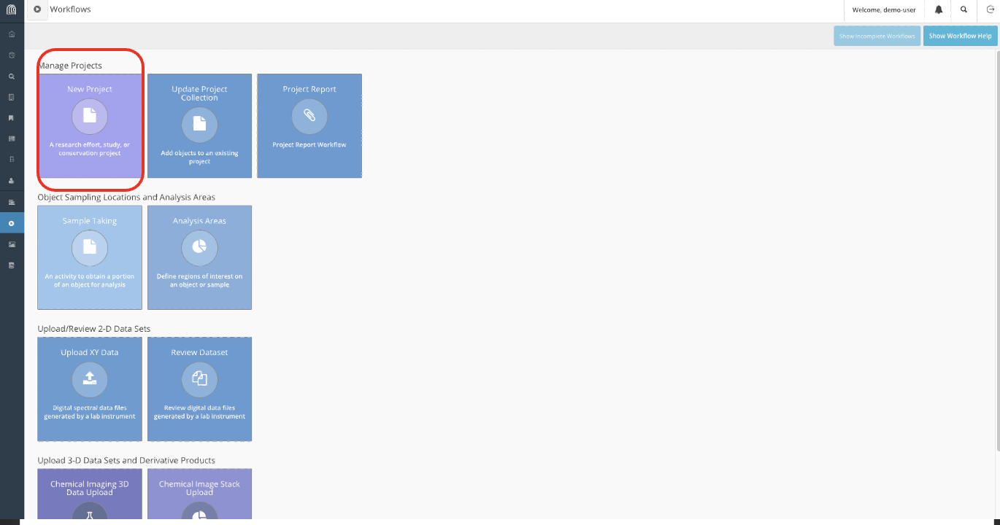
- First, navigate to the workflows tab on the sidebar and create a new project.
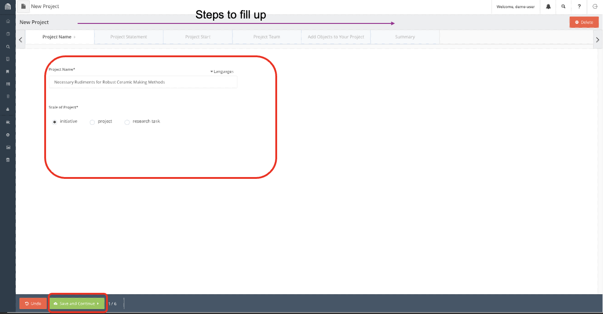
- Input the information accordingly.
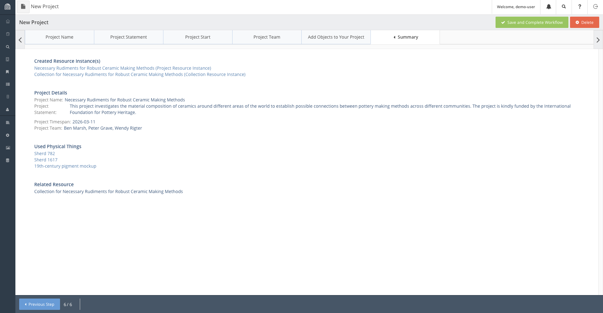
- Finally on the Summary tab, verify that all the information written is correct and complete the workflow.
Now the project is saved on the database, we can access it by search it up accordingly:
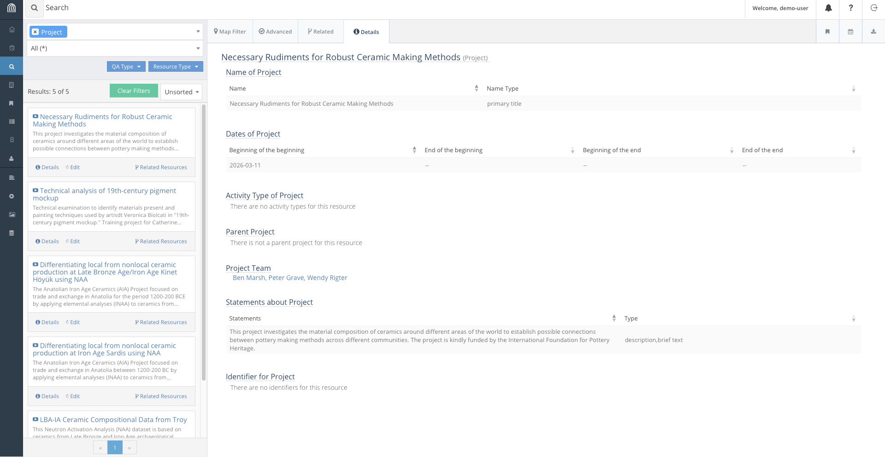
Modifying Entries Manually
Say some time has past and we have completed our project and we want to update our database to reflect that. There is no workflow made to update the end date of a project, and it would not make much sense to do so anyway, as it ought to be a simple task. We will need to directly modify the resource to reflect this change.
Search for our project in the database and when you find it, click on the edit button on it. Navigate to the node storing start and end dates and add the end date appropriately.
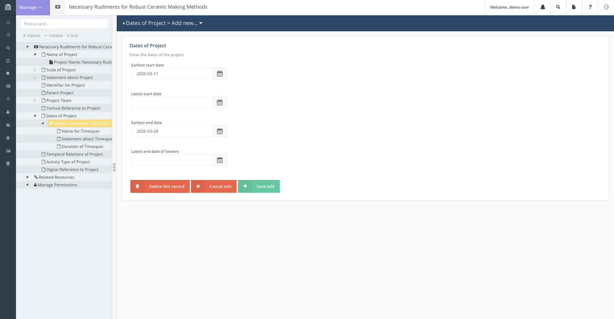
Deleting a Resource
As our access of the Arches for Science Demo is transient, leaving the page will revert all our changes to it. This will not be the case for our own databases.
Regardless, deleting data is an essential part of database maintanance and Arches provides a simple way to do so as well.
For instance, if it is decided that the project, Necessary Rudiments for Robust Ceramic Making Methods, is cancelled for any reason, we may decide the best way to represent this is to remove the project from the database.
To do so: - First, we search for the resource accordingly. - Click on the edit button to open the popup for the resource.
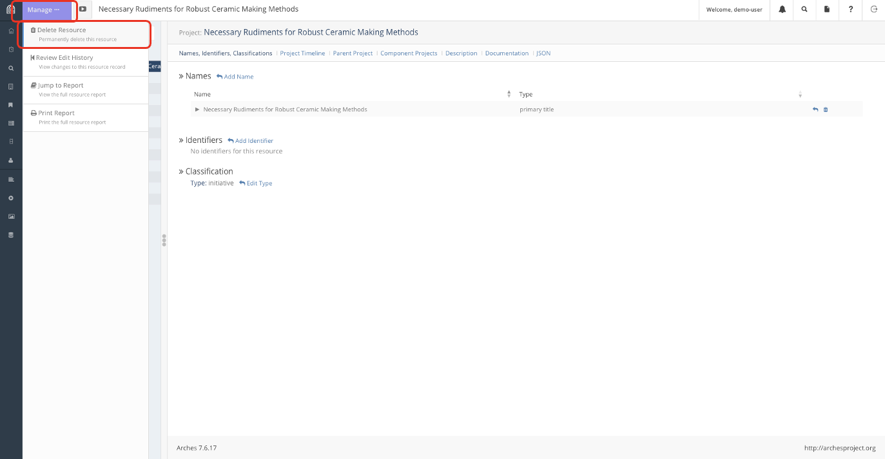
- Click on the “Manage” button on the top left to get the left tab to appear. The option to delete the resource should be the first option on the list.
Conclusion
This process of Creating, Reading (which was done in lesson 2), Updating and Deleting (CRUD) resources is the rudiment in all database management and is essential to keeping and maintaining the Arches Database.
Content from Let's Try it out
Last updated on 2026-03-26 | Edit this page
Estimated time: 20 minutes
Overview
Questions
- How would the Arches installation we will work with look like
Objectives
- Exercise populating an Arches Database.
- Interact with and modify persistent data written by peers.
Local Server
For this section, we will work on a local installation of Arches, which the instructors will share a link for.
Let’s get back to Harry, who after learning the Arches basics, is now ready to populate his own Arches installation. He has set up the database in episode 3 as follows:
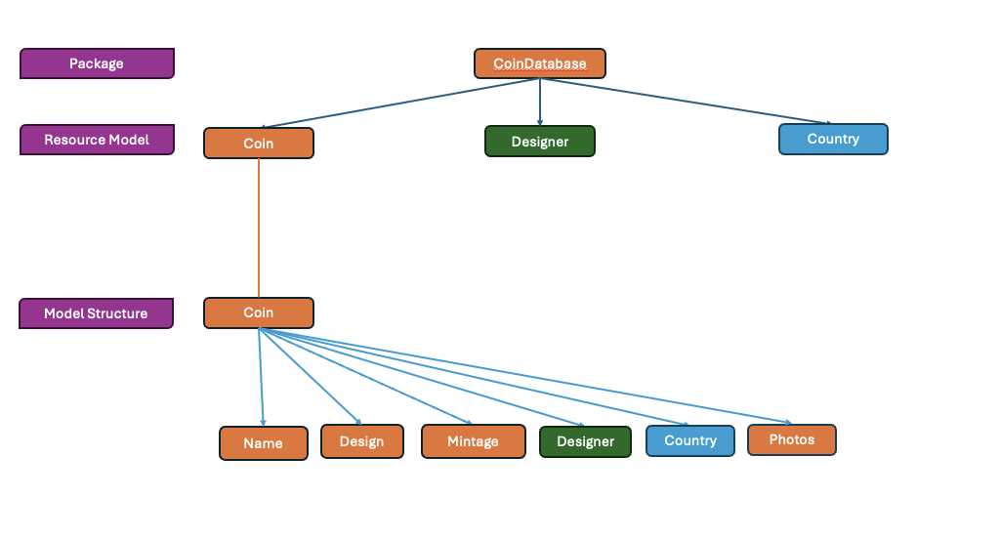
Recap: This means that there are 3 different types of resources in the database, Designers, Countries and the Coins themselves. Coins store information on its Name, Design, Mintage and Photoes of the coin as well as relations to Designers and Countries.
You will find some information on these resources in the tables below:
| Name | Design | Mint Date | Mint Quantity | Face Value | Actual Value | Designer | Country |
|---|---|---|---|---|---|---|---|
| Belgium 2 Euros | King Albert II and his royal monogram, the letter “A” beneath a crown | 2004 | 10000000 | 2 | 2 | Jan Alfons Keustermans | Belgium |
| Croatia 50 cents | Nikola Tesla with the Croatian checkerboard in the background. | 2023 | 30000000 | .50 | .50 cents | Ivica Družak | Croatia |
| Croatia 1 Euro | A marten with the Croatian checkerboard in the background. | 2023 | 30000000 | 1 | 1 | Stjepan Pranjković | Croatia |
| Croatia 5 cent | Nikola Tesla with the Croatian checkerboard in the background. | 2023 | 10000000 | 0.05 | 0.05 | Maja Škripelj | Croatia |
| Latvia 1 Euro | Latvian folk maide | 2014 | 10000000 | 1 | 1 | Guntars Sietiņš | Latvia |
| Irish 2 Euro | Celtic harp | 2003 | 30000000 | 2 | 2 | Jarlath Hayes | Ireland |
| Irish 1 Euro | Celtic harp | 2003 | 30000000 | 1 | 1 | Jarlath Hayes | Ireland |
| Irish 50 cents | Celtic harp | 2003 | 10000000 | .50 | .50 | Jarlath Hayes | Ireland |
| Irish 5 cents | Celtic harp | 2003 | 5000000 | .05 | .05 | Jarlath Hayes | Ireland |
| Brussels Atomium Commemerative Coin | An image of the Atomium in the center of the coin and the engraver’s initials to right with two mintmarks near the base. The outer ring of the coin features the 12 stars of the European Union, the letter ‘B’ and the year of mintage ‘2006’. | 2006 | 20000 | 2 | 20 | Luc Luycx | Belgium |
Content from Bulk Imports
Last updated on 2026-03-26 | Edit this page
Estimated time: 30 minutes
Overview
Questions
Objectives
Introduction
So far we have added a few entries into our database, but remember, Harry’s collection has over 500 unique coins!
-
questionsare displayed at the beginning of the episode to prime the learner for the content. -
objectivesare the learning objectives for an episode displayed with the questions. -
keypointsare displayed at the end of the episode to reinforce the objectives.
Inline instructor notes can help inform instructors of timing challenges associated with the lessons. They appear in the “Instructor View”
Challenge 1: Can you do it?
What is the output of this command?
R
paste("This", "new", "lesson", "looks", "good")
OUTPUT
[1] "This new lesson looks good"Challenge 2: how do you nest solutions within challenge blocks?
You can add a line with at least three colons and a
solution tag.
Figures
You can use standard markdown for static figures with the following syntax:
{alt='alt text for accessibility purposes'}
Callout sections can highlight information.
They are sometimes used to emphasise particularly important points but are also used in some lessons to present “asides”: content that is not central to the narrative of the lesson, e.g. by providing the answer to a commonly-asked question.
Math
One of our episodes contains \(\LaTeX\) equations when describing how to create dynamic reports with {knitr}, so we now use mathjax to describe this:
$\alpha = \dfrac{1}{(1 - \beta)^2}$ becomes: \(\alpha = \dfrac{1}{(1 - \beta)^2}\)
Cool, right?
- Use
.mdfiles for episodes when you want static content - Use
.Rmdfiles for episodes when you need to generate output - Run
sandpaper::check_lesson()to identify any issues with your lesson - Run
sandpaper::build_lesson()to preview your lesson locally